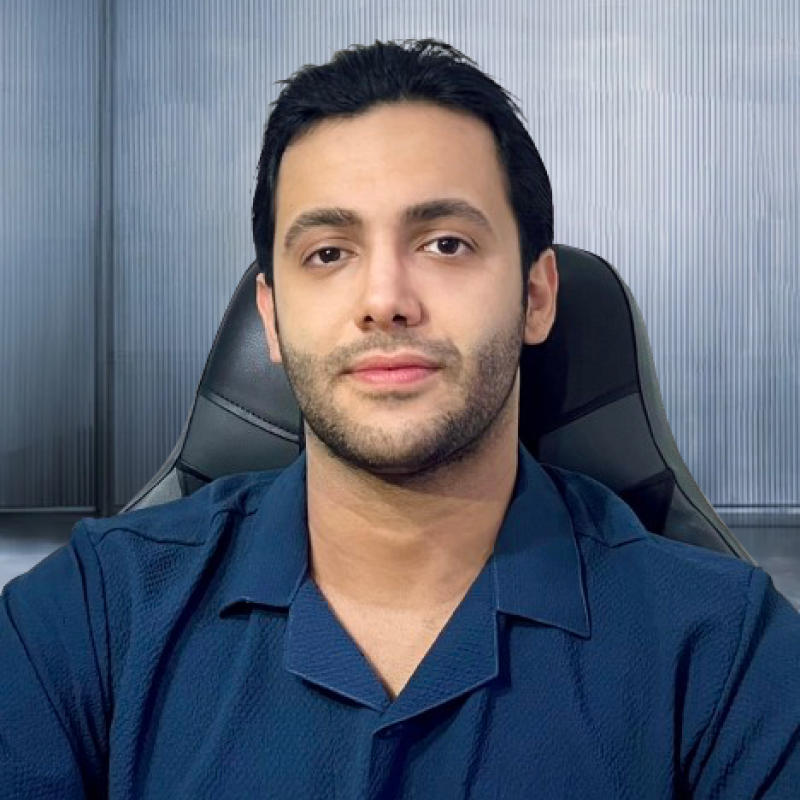

|

|
Pedram Navard
I work at the intersection of computer graphics, computer vision, and generative AI, with an interest in turning generative-AI outputs into playable, interactive experiences rather than static images. I am completing my BSc in Computer Science and Engineering at Islamic Azad University, Gilan Branch. My thesis builds a browser-based pipeline that makes AI-generated content explorable in real-time 3D using Three.js and WebGL.
What shifted my direction toward vision and graphics was getting involved in computer vision work at university—starting with activity recognition from video, then expanding into depth estimation, 3D reconstruction, and generative pipelines. I now want to pursue these interests more deeply in a funded MSc or PhD program.
Email /
CV /
GitHub /
LinkedIn
I am actively seeking funded MSc / PhD positions in Computer Vision, Computer Graphics, and Generative AI — Canada & Europe.
|
Education
BSc in Computer Science and Engineering — Islamic Azad University, Gilan Branch, Iran Sept 2022 – Feb 2026
GPA: 3.1 / 4.0 · Advisor: Dr. Hossein Azgomi
Thesis: Interactive 3D Visualization of Generative-AI Outputs: A Real-Time Web Graphics Pipeline—a browser-based renderer (Three.js / WebGL) that converts 2D generative outputs into navigable 3D scenes via depth estimation and image-based scene construction.
Relevant coursework: Linear Algebra, Calculus, Probability & Statistics, Data Structures & Algorithms, Computer Graphics, Digital Image Processing, Artificial Intelligence, Databases.
|
Projects
Research Interest: I study how machines see and reconstruct the visual world, and how generative models can produce content that is not just realistic but interactive. My work spans real-time video understanding, monocular depth estimation, and browser-based 3D scene reconstruction.
|
|
YOLOv8 + SAM
Detection & Segmentation
|
Real-Time Video Object Detection and Segmentation Pipeline
Pedram Navard
Computer Vision · 2023 – 2024
Developed a computer vision pipeline integrating YOLOv8 object detection with the Segment Anything Model (SAM) for real-time person segmentation. Combined bounding-box detection with prompt-based instance segmentation to produce accurate pixel-level masks and overlay visualizations, with automated end-to-end video processing and MP4 output generation for side-by-side performance comparison.
|
|
Marigold
Diffusion Depth
|
Monocular Depth Estimation Using Latent Diffusion Models
Pedram Navard
Computer Vision · 2024 – 2025
Implemented a computer vision pipeline from the Marigold diffusion model paper for monocular depth estimation. Integrated pretrained model checkpoints, inference scripts, and image preprocessing pipelines to perform affine-invariant depth estimation on custom input images, with visualization and evaluation on in-the-wild scenes.
|
|
3D Photo Inpainting
Three.js Viewer
|
Interactive 3D Scene Reconstruction from Single Images
Pedram Navard
Computer Graphics · 2024 – 2025
Implemented a single-image 3D scene reconstruction pipeline based on the 3D Photo Inpainting framework to generate novel viewpoints from RGB images. Converted monocular depth maps into layered 3D scene representations using depth-based warping and image inpainting, then built an interactive WebGL / Three.js viewer for real-time camera navigation of reconstructed scenes.
|
|
PIFuHD
Human Mesh
|
Single-Image Human 3D Reconstruction
Pedram Navard
Computer Graphics · 2025
Implemented a human reconstruction pipeline based on the PIFuHD framework to recover detailed 3D human geometry from single RGB images. Integrated image preprocessing, silhouette extraction, and neural implicit surface reconstruction to generate textured 3D human meshes, visualized in an interactive Three.js viewer with real-time camera controls and lighting.
|
|
Technical Skills
|
Programming: Python, JavaScript, SQL, PHP
ML / Vision: scikit-learn, NumPy, Pandas, Matplotlib, Seaborn, OpenCV
Graphics: Three.js, WebGL, GLSL
Web / Tools: React.js, Next.js, Firebase, Redux Toolkit, GSAP, Git
Foundations: linear algebra, probability, and optimization applied to perception and modeling
|
|
Honors & Activities
|
Built a real-time polling application at the IranWebFest Hackathon (React / Node.js)
Solved 100+ algorithmic problems on LeetCode (arrays, dynamic programming)
Author of technical articles on React best practices (Medium)
Open-source contributor; interests include applied ML/AI and creative developer tools
Languages: Persian (native) · English — TOEFL iBT 96/120 (Speaking 25)
|
|
{kind=link}